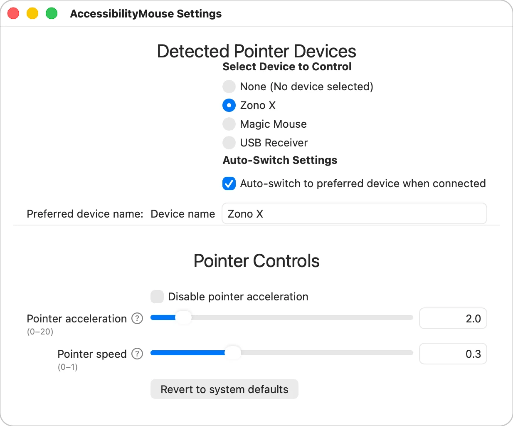

Speed for each device
Slow your head mouse right down for small, steady movements.
Pick a device and set its speed. Your everyday mouse, trackball or trackpad keeps its own settings, and choosing one never changes another.
- Pointer speed
- 0 slowest → 1 fastest
- Saved
- for each device, by name and ID
